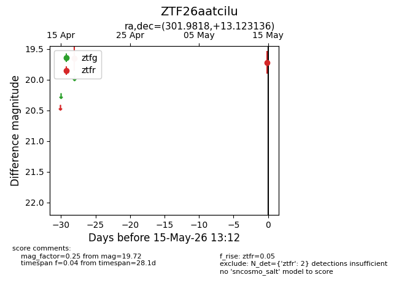
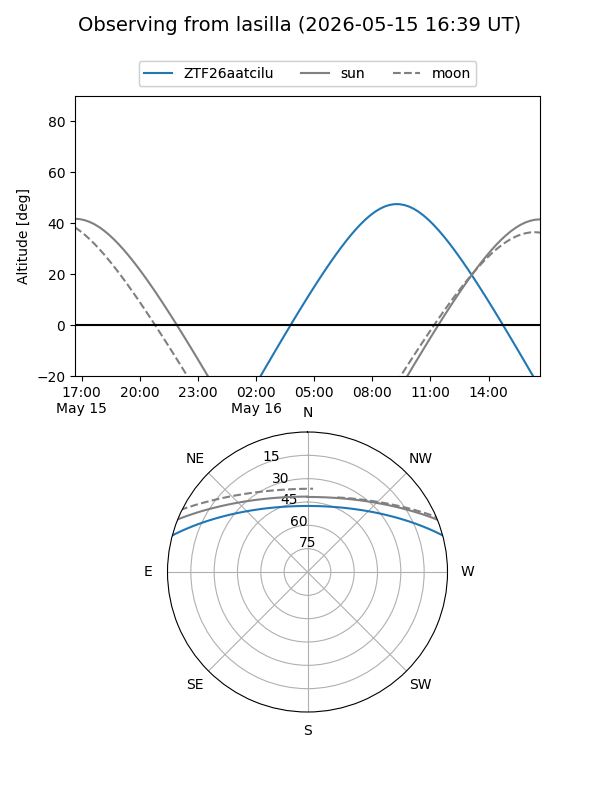
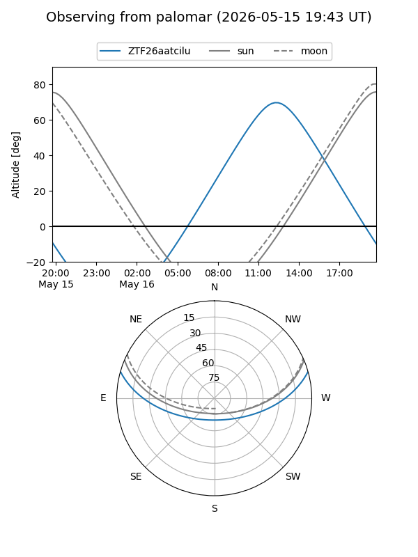

ZTF26aatcilu
Target ZTF26aatcilu at 2026-05-15 13:14
Aliases and brokers:
FINK: link
Lasair: link
ALeRCE: link
alt names
ZTF26aatcilu (ztf,fink_ztf)
Coordinates:
equatorial (ra, dec) = 301.9818,+13.12314
equatorial (HMS+DMS) = 20:07:55.64,+13:07:23.29
galactic (l, b) = (53.6235,-10.39339)
Flags:
Photometry:
last ztfr=19.72
2 ztfr detections
Lightcurve

Visibility


Additional plots